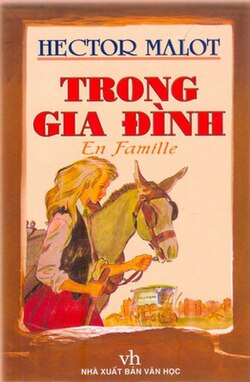
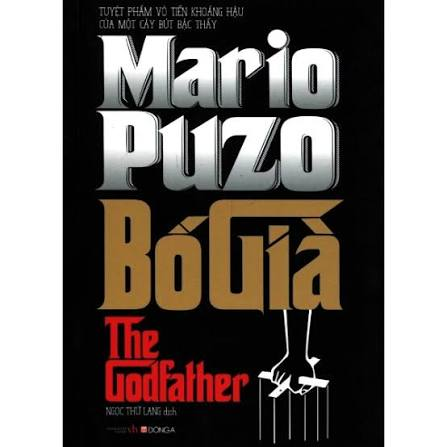
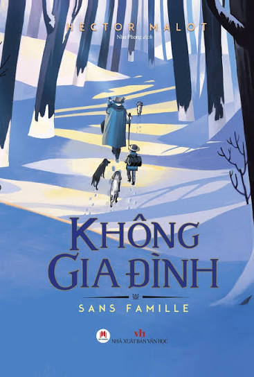

Sách yêu thích

Trong gia đình
Tác giả: Hector Malot
Một câu chuyện cảm động về tình cảm gia đình, nghị lực và hành trình tìm kiếm một mái ấm của nhân vật chính.

Bố già
Tác giả: Mario Puzo
Tôi thích cách tác phẩm xây dựng nhân vật và các mối quan hệ trong gia đình, đồng thời thể hiện sự trung thành và trách nhiệm.

Không gia đình
Tác giả: Hector Malot
Một câu chuyện về hành trình trưởng thành, những khó khăn trong cuộc sống và ý nghĩa của tình yêu thương.